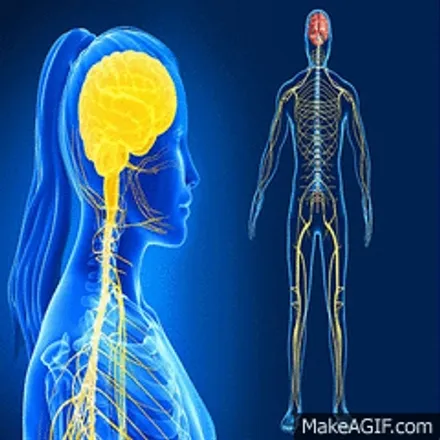
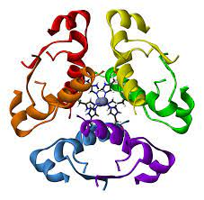
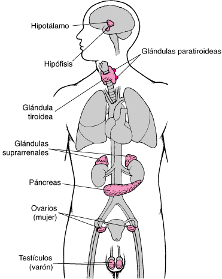
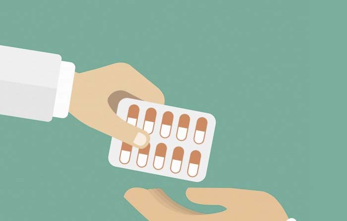
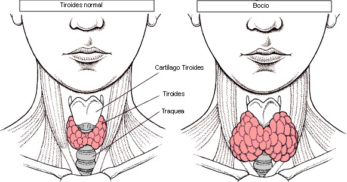

Introduction
The development of organisms involves growth and change in body proportions
With the activation of the reproductive organs, individuals enter the adult stage. This process cannot be controlled by the nervous system, which specializes in rapid responses.
Instead, hormones come into play, substances secreted by specific glands and released into the blood to be taken up by other cells. This communication system is similar to the transmission between neurons.
Some experts suggest that the nervous system evolved from the endocrine system.
While the endocrine system is present in both animals and plants, the nervous system is exclusive to animals and allows them to control movements and the acquisition of food.
The hormones
Hormones are chemical substances released into the blood by certain glands, therefore called internal secretion or endocrine glands, which act only on organs that have cells with specific receptors for them. These organs are the target organs or target organs of the hormone. A specific receptor is a special molecule that, thanks to its structure, can combine with a certain hormone and thus initiate a series of reactions. The result is that hormones specifically control the internal activity of different types of cells. In this way, for example, cellular metabolism, the sexual maturation of the child, the growth of the adolescent or blood pressure are regulated.
The endocrine system
It is the set of all the endocrine glands. The main ones are:
- Hypothalamus: It is a region of the brain that when it receives nerve impulses can produce several types of hormones. Most of them act on the pituitary gland.
- Pituitary: It is a gland the size of a pea that is located in the hypothalamus and attached to it. It secretes many different hormones, most of which act on the other endocrine glands, which is why it can be said that they practically direct the entire endocrine system. An anterior part called the adenohypophysis and a posterior part called the neurohypophysis can be differentiated...
- Thyroid: It is a gland located at the base of the neck. It produces the hormone thyroxine, which acts by accelerating cellular metabolism, and the hormone calcitonin, which promotes the deposit of calcium in the bones.
- Parathyroid: This gland is made up of four groups of cells located on the thyroid gland. It secretes the hormone parathormone, which causes the bones to release calcium into the blood.
- Adrenals: They are two small glands that are each located on a kidney. They produce the hormones aldosterone, which favors the reabsorption of sodium in the kidneys, cortisol, which favors the conversion of amino acids to glucose, and adrenaline, which prepares the body for action.
- Pancreas: This gland, in addition to secreting pancreatic digestive juice, which is why it is an exocrine gland, is also an endocrine gland, since it produces the hormone insulin, which allows cells to capture the glucose present in the blood.
- Ovaries: These organs, in addition to producing eggs, also have endocrine glandular function, since they produce hormones called estrogens that regulate secondary female sexual characteristics (high-pitched voice, mammary glands, wide hips, skin with low hairiness, etc.).
- Testicles: These organs, in addition to producing sperm, also have endocrine glandular function, since they produce the hormone testosterone that regulates secondary male sexual characteristics (deep voice, greater muscle mass, skin with abundant hair, etc.).
Hormonal Control
The endocrine glands can have two types of stimuli: nervous stimulation and chemical stimulation.
Nervous stimulus:

Certain external or internal situations (sleep, fear, lack of affection, stress, noise, etc.) are captured by the brain that influences the hypothalamus, which sends, through the blood, hormones that excite or that inhibit, depending on the case, the pituitary gland. Pituitary hormones, in turn, excite or inhibit the endocrine glands. The result is that the latter will secrete more or less hormones, as required.
Chemical stimulus:
The concentration of a hormone in the blood can be regulated by increasing or decreasing the secretion of a pituitary hormone, which is due to the existence of a mechanism called feedback. This mechanism is governed by the pituitary gland and the endocrine glands that secrete hormones that act on it.
Related Diseases
- Acromegaly: This disease consists of excessive production of growth hormone in an adult. Its most characteristic symptoms are excessive growth of the hands, feet, chin, nose and other bones of the skull.
- Goiter: This disease consists of excessive production of the hormone thyroxine. It is characterized by an overgrowth of the thyroid, involving an anterior lump in the neck and exophthalmia (protruding eyes). In addition, there is hyperactivity, weight loss, insomnia and irritability. 
- Cretinism: This disease consists of a deficiency of the hormone thyroxine during childhood. The effects are severe mental deficiency, low metabolic rate, poor genital development, and short stature. It may be caused by a lack of iodine in the diet or by an inability to absorb it.
- Diabetes mellitus: This disease consists of a lack or shortage of production of the hormone insulin. Symptoms are excess glucose in the blood, abundant urination, ketones in the breath, dizziness and fainting. Type 1 or infantile disease may be due to a failure of the immune system that destroys the insulin-producing cells of the pancreas (autoimmune disease). Type 2 or adult cancer may be due to disorders of the pancreas due to age.
- Diabetes insipidus: It consists of a deficiency of the hormone vasopressin. Symptoms are abundant urination and thirst.
- Pituitary dwarfism: Consists of insufficient growth due to lack or shortage of growth hormone production.
- Pituitary gigantism: Consists of excessive growth due to excess growth hormone.
Rules for Detecting Disorders
- A child who is not growing at a normal rate may be suffering from a growth hormone deficiency.
- A child who is growing at an excessive rate may be suffering from excess growth hormone.
- A person who is constantly urinating, is very tired and has lost a lot of weight may have diabetes.
- A person who has an increase in the volume of the neck (goiter), excessive prominence of the eye sockets, tachycardia and weight loss may suffer from goiter.
If we allow a long time to pass without acting on a disorder of our endocrine system, the injuries can be very serious. Therefore, it is necessary to be attentive to the symptoms and, if in doubt, consult an endocrinologist.